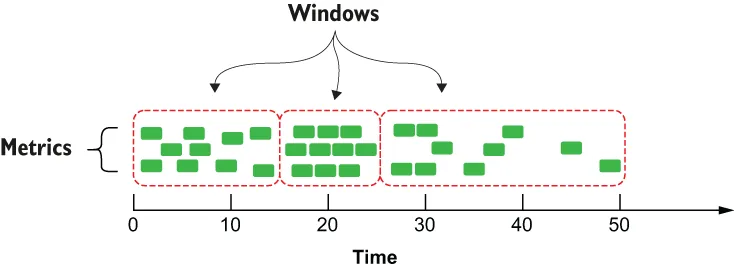
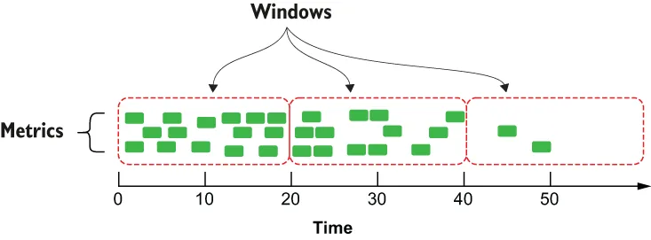

Moving averages aren’t the only meaningful statistic that can be calculated from univariate datasets. In fact, it is quite easy to calculate just about any of the statistics that are commonly used in statistical analysis using a Pulsar function. Take, for example, the function code shown in the next listing, which computes the following statistics in a single function: geometric mean, population variance, kurtosis, root mean square deviation, skewness, and standard deviation.
移动平均并不是唯一能从单变量数据集中算出来的有意义的统计量。事实上，用一个 Pulsar 函数来计算出统计分析中常用的几乎任何一种统计量，都是相当容易的。以下面这份清单中的函数代码为例，它在单个函数中算出了下列统计量：几何平均数、总体方差、峰度、均方根偏差、偏度，以及标准差。
Listing 12.2 A Pulsar function to calculate multiple statistics
import org.apache.commons.math3.stat.descriptive.DescriptiveStatistics;
import org.apache.commons.math3.stat.descriptive.SummaryStatistics;
import org.apache.commons.math3.stat.regression.*; ❶
import org.apache.pulsar.functions.api.Context;
import org.apache.pulsar.functions.api.Function;
public class TimeSeriesSummaryFunction implements
Function<Collection<Double>, SensorSummary> {
@Override
public SensorSummary process(Collection<Double> input, Context context)
throws Exception { ❷
double[][] data = convertToDoubleArray(input); ❸
SimpleRegression reg = calcSimpleRegression(data);
SummaryStatistics stats = calcSummaryStatistics(data);
DescriptiveStatistics dstats = calcDescriptiveStatistics(data);
double rmse = calculateRSME(data, reg.getSlope(), reg.getIntercept());
SensorSummary summary =
SensorSummary.newBuilder()
.setStats(TimeSeriesSummary.newBuilder()
.setGeometricMean(stats.getGeometricMean()) ❹
.setKurtosis(dstats.getKurtosis())
.setMax(stats.getMax())
.setMean(stats.getMean())
.setMin(stats.getMin())
.setPopulationVariance(stats.getPopulationVariance())
.setRmse(rmse)
.setSkewness(dstats.getSkewness())
.setStandardDeviation(dstats.getStandardDeviation())
.setVariance(dstats.getVariance())
.build())
.build();
return summary;
}
private SimpleRegression calcSimpleRegression(double[][] input) {
SimpleRegression reg = new SimpleRegression();
reg.addData(input);
return reg;
}
private SummaryStatistics calcSummaryStatistics(double[][] input) {
SummaryStatistics stats = new SummaryStatistics();
for(int i = 0; i < input.length; i++) {
stats.addValue(input[i][1]);
}
return stats;
}
private DescriptiveStatistics calcDescriptiveStatistics(double[][] in)
{
DescriptiveStatistics dstats = new DescriptiveStatistics();
for(int i = 0; i < in.length; i++) {
dstats.addValue(in[i][1]);
}
return dstats;
}
private double calculateRSME(double[][] input, double slope, double intercept) {
double sumError = 0.0;
for (int i = 0; i < input.length; i++) {
double actual = input[i][1];
double indep = input[i][0];
double predicted = slope*indep + intercept;
sumError += Math.pow((predicted - actual),2.0);
}
return Math.sqrt(sumError/input.length);
}
private double[][] convertToDoubleArray(Collection<Double> in)
throws Exception {
double[][] newIn = new double[in.size()][2];
int i = 0;
for (Double d : in) {
newIn[i][0] = i;
newIn[i][1] = d;
i++;
}
return newIn;
}
}
❶ This function relies on external libraries to perform the statistical calculations.
❶ 这个函数依赖外部库来执行那些统计计算。
❷ The input collection contains all of the sensor readings within the specified window.
❷ 输入的集合包含了指定窗口内的全部传感器读数。
❸ Convert the data from a collection to a two-dimensional array.
❸ 把数据从一个集合转换成一个二维数组。
❹ Use the various computed statistics to populate the result.
❹ 用算出的各项统计量来填充结果。
Obviously, these statistics cannot be computed from a single data point in the time-series data, but rather need to be computed from a larger collection of data elements. Attempting to calculate the geometric mean of a single number makes no sense. Therefore, we need to specify a strategy for splitting the endless stream of metric data into finite sets of data, known as windows, which we will use to calculate these statistics. So how do we go about defining the boundaries of a data window? Within Pulsar Functions, there are two policies used to control window boundaries:
显然，这些统计量是无法从时间序列数据中的单个数据点算出来的，而是需要从更大的一组数据元素中计算出来。试图去计算单个数字的几何平均数是毫无意义的。因此，我们需要指定一种策略，把那条无穷无尽的指标数据流切分成有限的数据集合，即所谓的窗口（window），我们将用它们来计算这些统计量。那么，我们该如何着手定义一个数据窗口的边界呢？在 Pulsar Functions 中，有两条策略被用来控制窗口边界：
Trigger policy—Controls when our function code is executed. These are the rules that the Apache Pulsar Functions framework uses to notify our code that it is time to process all of the data collected in the window.
触发策略（Trigger policy）——控制我们的函数代码何时被执行。这些是 Apache Pulsar Functions 框架用来通知我们的代码"是时候处理窗口中所收集的全部数据了"的规则。
Eviction policy—Controls the amount of data retained in the window. These are the rules used to decide if a data element should be retained or evicted from the window.
驱逐策略（Eviction policy）——控制窗口中留存的数据量。这些规则被用来决定某个数据元素应当被保留在窗口中，还是被驱逐出窗口。
Both of these policies are driven by either time or the quantity of data in the window and can be defined in terms of time or length (number of data elements). Let’s explore the distinction between these two policies and how they work in concert with one another. While there are a variety of windowing techniques, the most prominent ones are tumbling and sliding windows.
这两条策略都由时间或窗口中的数据量所驱动，并且可以按时间来定义，也可以按长度（数据元素的个数）来定义。让我们来探究一下这两条策略之间的区别，以及它们是如何协同工作的。虽然存在多种多样的窗口技术，但最突出的两种是滚动窗口（tumbling window）和滑动窗口（sliding window）。
Tumbling windows are contiguous, non-overlapping windows that are either of fixed-size, such as 100 elements, or taken at fixed intervals, such as every five minutes. The eviction policy for tumbling windows is always disabled to allow the window to become completely full. Therefore, you only need to specify the trigger policy you want to use as either count-based or time-based. Figure 12.9 shows the behavior of a tumbling window with a length-based trigger policy set to 10, which means that at the point in time at which 10 items are in the window, the Pulsar function code will be executed, and the window will be cleared. This behavior is irrespective of time; whether it takes five seconds or five hours for the window count to reach 10 items doesn’t matter—all that matters is when the count reaches the specified length. Therefore, the first window takes approximately 15 seconds to become full, while the last one requires 25 seconds to elapse before the window fills up.
滚动窗口是相邻的、互不重叠的窗口，它们要么是固定大小的，例如 100 个元素；要么是按固定间隔取的，例如每五分钟一次。滚动窗口的驱逐策略始终被禁用，以便让窗口能够被完全填满。因此，你只需要指定自己想用的那条触发策略——基于计数，或基于时间。图 12.9 展示了一个滚动窗口的行为，其基于长度的触发策略被设为 10；这意味着：在窗口内已有 10 个元素的那个时间点上，Pulsar 函数代码就会被执行，而窗口随后会被清空。这种行为与时间无关——窗口计数达到 10 个元素究竟花了五秒还是五小时，都无所谓；唯一要紧的是计数何时达到那个指定的长度。因此，第一个窗口大约花了 15 秒才被填满，而最后一个则要等 25 秒过去之后窗口才填满。

Figure 12.9 When using a count-based trigger, each tumbling window will contain the exact same number of metrics, but may span different durations of time.
图 12.9 使用基于计数的触发器时，每个滚动窗口都会包含完全相同数量的指标，但它们所跨越的时长可能各不相同。
The sliding window technique, on the other hand, utilizes a combination of a trigger policy that defines the sliding interval and an eviction policy that limits the amount of data retained within the window for processing. Figure 12.10 shows the behavior of a sliding window with the eviction policy configured to be 20 seconds, meaning that any data older than 20 seconds will not be retained or used in the calculation. The trigger policy is also configured to be 20 seconds, which means that every 20 seconds the associated Pulsar function code will be executed, and we will have access to all of the data within the entire window length to perform our calculation.
而滑动窗口技术则采用一种组合：一条定义了滑动间隔的触发策略，外加一条限制了窗口内为处理而留存的数据量的驱逐策略。图 12.10 展示了一个滑动窗口的行为，其驱逐策略被配置为 20 秒——这意味着任何早于 20 秒的数据都不会被留存、也不会被用于计算。其触发策略同样被配置为 20 秒，这意味着每隔 20 秒，与之关联的 Pulsar 函数代码就会被执行一次，而我们将能够访问整个窗口长度内的全部数据，以执行自己的计算。

Figure 12.10 When using a time-based sliding window, each window will span the exact same amount of time and will most likely contain different numbers of metrics.
图 12.10 使用基于时间的滑动窗口时，每个窗口都会跨越完全相同的一段时长，但其中所包含的指标个数很可能各不相同。
Thus, in the scenario shown in figure 12.10, the first window contains 15 events, while the last one contains only two. In this example, both the eviction and trigger policies are defined in terms of time; however, it is also possible to define one or both of these in terms of length instead. Additionally, the window length and sliding interval don’t have to be the exact same value. For instance, if you wanted to perform the SMA using this technique, you could achieve that by setting the window length to 100 and the sliding interval to 1.
于是，在图 12.10 所示的场景中，第一个窗口包含了 15 个事件，而最后一个只包含两个。在这个例子中，驱逐策略和触发策略都是按时间来定义的；不过，也可以用长度来定义其中一条或两条。此外，窗口长度和滑动间隔不必是完全相同的数值。举例来说，如果你想用这种技术来执行 SMA，那么把窗口长度设为 100、滑动间隔设为 1，就能达到目的。
Once these statistical summaries have been calculated, they can be sent upstream to the edge servers to be compared to the stats computed for similar equipment within the industrial infrastructure to detect potential problems, or they could be forwarded to a database within the cloud for longer-term storage and future analysis. Performing the calculations before storing the data in the database will save us from having to recalculate these values during the analysis phase, which can be an expensive operation. Pulsar Functions provides the four different windowing configuration parameters shown in table 12.1, which enables you to implement all four variations of the windows discussed in this section when used in the proper combination.
一旦这些统计摘要被算出来，它们就可以被向上游发送到边缘服务器，与工业基础设施内相似设备所算出的统计量做比较，以探测潜在问题；或者，它们也可以被转发到云端的一个数据库中，以做更长期的存储和未来的分析。在把数据存进数据库之前就完成这些计算，可以省得我们在分析阶段再去重新计算这些值——那可是一项开销很大的操作。Pulsar Functions 提供了表 12.1 中所示的四个不同的窗口配置参数；以恰当的方式组合使用时，它们能让你实现本节所讨论的窗口的全部四种变体。
Table 12.1 Configuring windowing for Pulsar functions
Time-based tumbling window |
—windowLengthDurationMS==xxx |
Length-based tumbling window |
—windowLengthCount==xxx |
Time-based sliding window |
—windowLengthDurationMS==xxx —slidingIntervalDurationMs=xxx |
Length-based sliding window |
—windowLengthCount==xxx —slidingIntervalCount=xxx |
表 12.1 为 Pulsar 函数配置窗口
| 窗口类型 | 配置参数 |
|---|---|
| 基于时间的滚动窗口 | —windowLengthDurationMS==xxx |
| 基于长度的滚动窗口 | —windowLengthCount==xxx |
| 基于时间的滑动窗口 | —windowLengthDurationMS==xxx —slidingIntervalDurationMs=xxx |
| 基于长度的滑动窗口 | —windowLengthCount==xxx —slidingIntervalCount=xxx |
Implementing either of these types of windowing functions in Pulsar Functions is straightforward and only requires that you specify a java.util.Collection as the input type. Therefore, if we wanted to run the Pulsar function shown in listing 12.2 to perform the statistic calculation on a sliding window of data, then all that we would have to do is submit it using the command shown in the following listing, and the Pulsar Functions framework would handle the rest for us.
在 Pulsar Functions 中实现这两种窗口函数中的任何一种都很直截了当，只需把输入类型指定为 java.util.Collection 即可。因此，如果我们想运行清单 12.2 中所示的那个 Pulsar 函数，以便在一个数据滑动窗口上执行统计量计算，那么我们所要做的一切，就是用下面这份清单中所示的命令把它提交上去，其余的事情 Pulsar Functions 框架会替我们处理好。
Listing 12.3 Performing the statistical calculation on a sliding window of data
$ bin/pulsar-admin functions create \
--jar edge-analytics-functions-1.0.0.nar \
--classname com.manning.pulsar.iiot.analytics.TimeSeriesSummaryFunction \
--windowLengthDurationMS==20000 \ ❶
--slidingIntervalDurationMs=20000. ❷
❶ Defines an eviction policy of 20 seconds
❶ 定义一条 20 秒的驱逐策略。
❷ Defines a trigger policy of 20 seconds
❷ 定义一条 20 秒的触发策略。
This makes it easy to utilize either of these windowing techniques without having to write the significant amount of boilerplate code necessary to perform the collection and retention of the individual events. Instead, it allows you to write clean code that focuses solely on the business logic you are trying to implement.
这使得我们很容易就能用上这两种窗口技术中的任何一种，而不必去编写为执行各个事件的收集与留存所必需的大量样板代码。取而代之，它让你能够编写出干净的代码，只专注于你正在试图实现的业务逻辑。